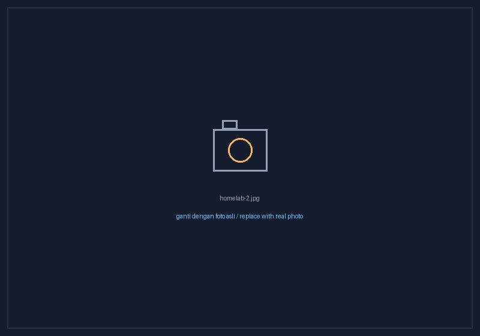

Portofolio & Dokumentasi KerjaPortfolio & Work Documentation
Dokumentasi foto dan hasil pekerjaan dari setiap pengalaman kerja —
mulai dari implementasi jaringan perbankan hingga pengembangan
aplikasi. Klik gambar untuk memperbesar.Photo documentation and work results from each role — from banking
network implementation to application development. Click any image
to enlarge.
IT Desktop Support Engineer — PT Berca Hardayaperkasa
Implementasi infrastruktur IT perbankan di lingkungan Bank
Mandiri: deployment access point & tablet untuk program Smart
Branch, serta assessment dan penggantian switch–router Huawei di
lebih dari 30 cabang Jabodetabek dan luar kota.Banking IT infrastructure implementation within Bank Mandiri:
access point & tablet deployment for the Smart Branch program,
plus assessment and replacement of Huawei switches and routers
across 30+ branches in and beyond Greater Jakarta.
Dukungan teknis harian untuk ±25 staf: instalasi Windows,
software, driver, dan antivirus; pemeliharaan jaringan kantor;
serta digitalisasi administrasi dan arsip dokumen proyek.Daily technical support for ±25 staff: Windows, software, driver,
and antivirus installation; office network maintenance; and
digitalization of administration and project document
archives.
it-support · windows · printer · ip-addressing · digitalisasi-arsip
Instalasi & setup perangkat kantorOffice device installation & setupPemeliharaan jaringan & printerNetwork & printer maintenanceDigitalisasi arsip dokumen proyekProject document digitalization
Mei 2024 – Jul 2024
Freelance IT Support — PT Jakarta International Expo
Dukungan operasional IT selama Pekan Raya Jakarta (PRJ):
konfigurasi dan troubleshooting terminal POS, printer tiket,
scanner gate, jaringan, dan perangkat pembayaran secara
real-time.IT operations support during the Jakarta Fair (PRJ): real-time
configuration and troubleshooting of POS terminals, ticket
printers, gate scanners, network, and payment devices.
Setup terminal POS & perangkat pembayaranPOS terminal & payment device setupTroubleshooting scanner gate tiketGate ticket scanner troubleshootingDukungan teknis lapangan selama eventOn-site technical support during the event
Jan 2024 – Apr 2024
Freelance IT Helpdesk / Support — PT Kreasindo
Pemantauan performa internal system dan analisis log aplikasi;
pelaporan rata-rata ±15 issue per bulan ke tim developer serta
penyusunan laporan kinerja aplikasi berkala.Internal system performance monitoring and application log
analysis; reporting ±15 issues per month to the developer team and
preparing periodic application performance reports.
Pengembangan antarmuka web dan mobile responsif menggunakan
Vue.js, implementasi fitur baru, dan kolaborasi tim untuk
meningkatkan efisiensi pengembangan produk.Development of responsive web and mobile interfaces using Vue.js,
new feature implementation, and team collaboration to improve
product development efficiency.
vue.js · frontend · responsive-ui
Antarmuka web dengan Vue.jsWeb interface built with Vue.jsTampilan mobile responsifResponsive mobile view
Okt 2020 – Jul 2022
Junior Backend Developer — The Big Rich Group
Perancangan dan pengembangan fitur aplikasi frontend maupun
backend, pembangunan REST API untuk integrasi sistem internal dan
pihak ketiga, serta maintenance dan optimasi aplikasi.Design and development of frontend and backend application
features, REST API development for internal and third-party
integration, plus application maintenance and optimization.
laravel · rest-api · mysql · backend
Pengembangan REST APIREST API developmentFitur aplikasi frontend & backendFrontend & backend application features
status: in_progress
Project yang Sedang DikerjakanProjects in Progress
Personal lab dan eksplorasi mandiri sebagai persiapan menuju
peran Junior System Administrator. Bagian ini diperbarui seiring
perkembangan project.Personal labs and self-driven exploration in preparation for a
Junior System Administrator role. This section is updated as the
projects progress.
~/homelab-virtualbox
berjalanongoing
Homelab VirtualBoxVirtualBox Homelab
Simulasi jaringan dan eksplorasi konfigurasi sistem di
lingkungan virtual — mencakup instalasi Ubuntu Server,
konfigurasi layanan jaringan, VLAN, routing, dan firewall
dasar.Network simulation and system configuration exploration in a
virtual environment — covering Ubuntu Server installation,
network service configuration, VLAN, routing, and basic
firewalls.
Topologi lab virtualVirtual lab topology

Konfigurasi Ubuntu ServerUbuntu Server configuration
Eksplorasi instalasi dan konfigurasi Confluent Platform —
streaming berbasis Apache Kafka — pada lingkungan Ubuntu LTS
lokal.Exploring the installation and configuration of Confluent
Platform — Apache Kafka-based streaming — on a local Ubuntu LTS
environment.
Instalasi Confluent PlatformConfluent Platform installationKonfigurasi Kafka di Ubuntu LTSKafka configuration on Ubuntu LTS